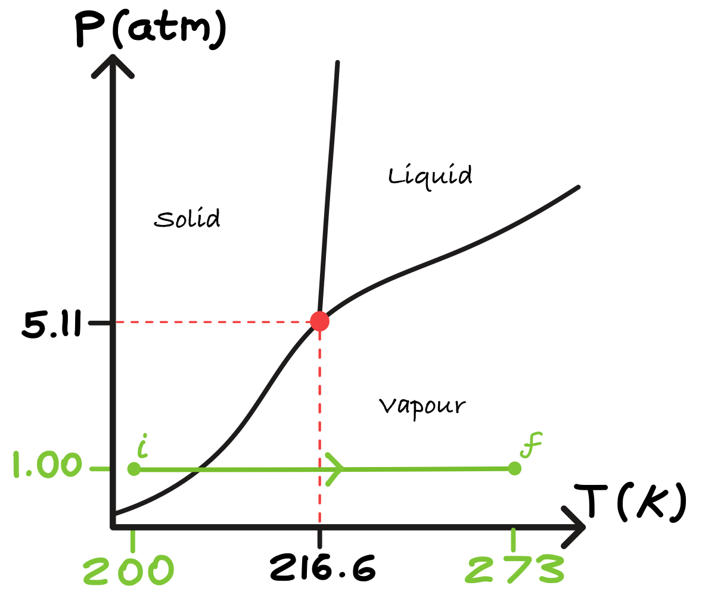
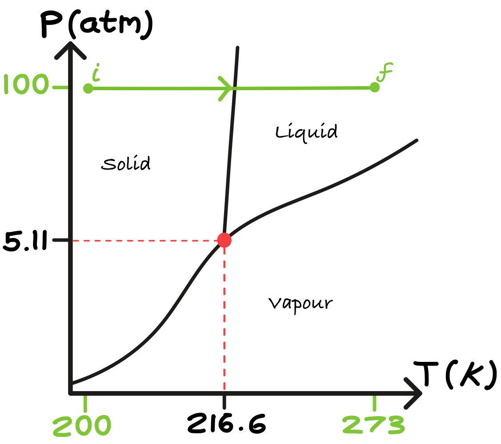
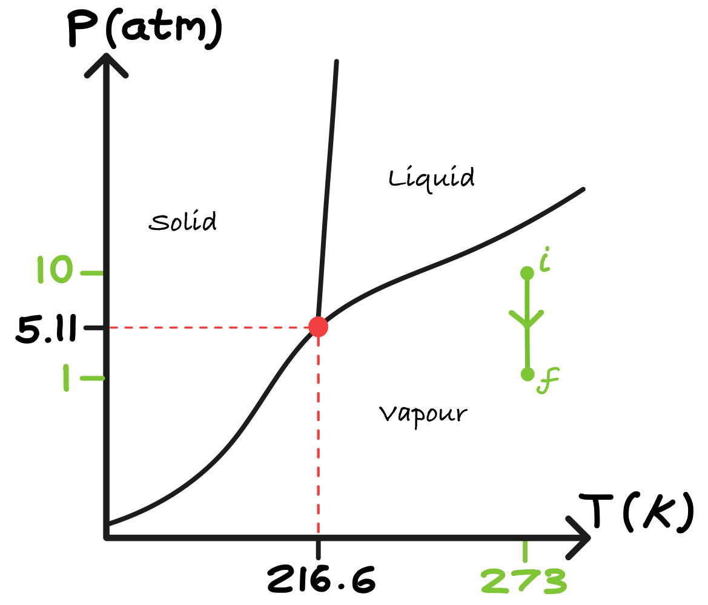
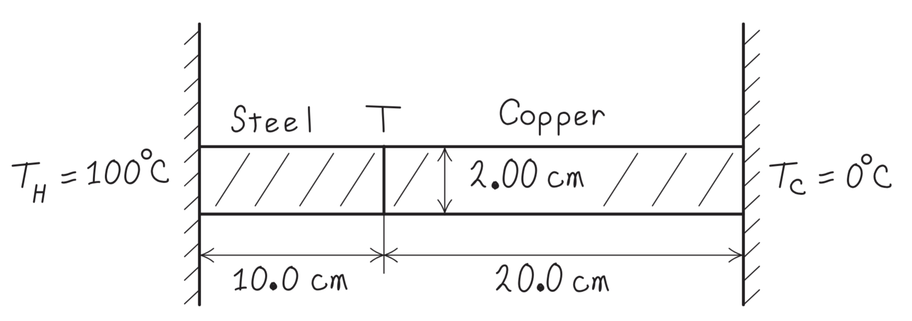

2.10. Solutions#
The world’s power consumption is currently around 20 TW, and growing! (1 TW = 1012W.) Burning one ton of crude oil (which is nearly seven barrels worth) produces about 42 GJ (1 GJ= 109J). If the world’s total power needs were to come entirely from burning oil (a large fraction currently does), how much oil would we be burning per second? (5)
\(\frac{20 \times 10^{12}\ \text{J s}^{-1}}{42 \times 10^{9}\ \text{J tonne}^{-1}} = 4.76 \times 10^{2}\ \text{tonnes s}^{-1}\)
The molar heat capacity of gold is 25.4 Jmol−1K−1. Its density is 19.3×103 kgm−3. Calculate the specific heat capacity of gold and the heat capacity per unit volume. What is the heat capacity of 4×106 kg of gold? (This is roughly the holdings of Fort Knox.)
1 mole of Au has mass \(197\ \text{g} = 0.197\ \text{kg}\).
Specific heat capacity: \(c = \frac{25.4}{0.197} = 1.29 \times 10^{2}\ \text{J kg}^{-1}\text{K}^{-1}\)
Heat capacity per unit volume: \(C/V = \rho c = (19.3 \times 10^{3})(1.29 \times 10^{2}) \approx 2.5 \times 10^{6}\ \text{J m}^{-3}\text{K}^{-1}\)
Heat capacity of \(4 \times 10^{6}\) kg of gold: \(C = mc = (4 \times 10^{6})(1.29 \times 10^{2}) \approx 5.2 \times 10^{8}\ \text{J K}^{-1}\)
Explain the differences and similarities between the definitions of the kelvin and Celsius temperature scales. (5)
Same interval size: a change of \(1\ \text{K}\) equals a change of \(1\,^\circ\text{C}\).
Different zero points: kelvin is an absolute scale; Celsius is offset.
Conversion: \(T(\text{K}) = T(^\circ\text{C}) + 273.15\)
Physical meaning of zero:
\(0\ \text{K}\) is absolute zero.
\(0\,^\circ\text{C}\) was historically defined by the freezing point of water at 1 atm (now defined by a fixed offset from kelvin).
The triple point of CO\(_2\) is at \(5.11\) atm and \(216.6\) K. Describe the phase changes that occur in a sample of CO\(_2\) under the following conditions. Include sketches to show these phase changes relative to the phase boundaries. (5)
Heating from 200 K to 273 K at 1 atm
Triple point of CO\(_2\): \(P_t = 5.11\ \text{atm},\quad T_t = 216.6\ \text{K}\)
Below the triple-point pressure, liquid CO\(_2\) cannot exist.
\(1\ \text{atm} < 5.11\ \text{atm}\), so no liquid phase is possible.
At 200 K, CO\(_2\) is solid.
On heating, the solid–gas (sublimation) boundary is crossed.
At 273 K, CO\(_2\) is a gas.

Heating from 200 K to 273 K at 100 atm
\(100\ \text{atm} > 5.11\ \text{atm}\), so a liquid phase is possible.
At 200 K, CO\(_2\) is solid.
Heating crosses the solid–liquid boundary.
At 273 K and 100 atm, CO\(_2\) remains liquid.

Reducing pressure from 10 atm to 1 atm at 273 K
CO\(_2\) is gaseous at both pressures.
No phase boundary is crossed.

Paths on a \(P\)–\(T\) diagram:
(a) horizontal at 1 atm crossing sublimation line
(b) horizontal at 100 atm crossing melting line
(c) vertical at 273 K in gas region
{kind=link}
{kind=link}
{kind=link}
What is the minimum quantity of ice at \(-10\,^\circ\text{C}\) required to bring 500 g of liquid water at \(60\,^\circ\text{C}\) to \(0\,^\circ\text{C}\)? (5)
Use: \(c_{\text{water}} = 4180\ \text{J kg}^{-1}\text{K}^{-1}\) \(c_{\text{ice}} = 2100\ \text{J kg}^{-1}\text{K}^{-1}\) \(L_f = 3.34 \times 10^{5}\ \text{J kg}^{-1}\)
Heat released by cooling the water: \(Q_{\text{water}} = mc\Delta T = (0.500)(4180)(60) = 1.254 \times 10^{5}\ \text{J}\)
Heat absorbed per kg of ice: \(q_1 = c_{\text{ice}}(10) = 2.10 \times 10^{4}\ \text{J kg}^{-1}\) \(q_2 = L_f = 3.34 \times 10^{5}\ \text{J kg}^{-1}\)
Total per kg: \(q = q_1 + q_2 = 3.55 \times 10^{5}\ \text{J kg}^{-1}\)
Equating heat exchanged: \(m_{\text{ice}} q = Q_{\text{water}}\)
\(m_{\text{ice}} = \frac{1.254 \times 10^{5}}{3.55 \times 10^{5}} \approx 0.35\ \text{kg}\)
Minimum ice required: approximately 350 g.
Conduction through two bars - (UPMP Example 17.12)
A steel bar 10.0 cm long is welded end to end to a copper bar 20.0 cm long. Each bar has a square cross section, 2.00 cm on a side. The free end of the steel bar is kept at 100°C by placing it in contact with steam, and the free end of the copper bar is kept at 0°C by placing it in contact with ice. Both bars are perfectly insulated on their sides. The thermal conductivity of steel is \(50.2 \text{W/m} \cdot K\), and for copper it is \(385 \text{W/m} \cdot K\).
{kind=link}

Find the steady-state temperature at the junction of the two bars
The heat currents in these end-to-end bars must be the same. We are given “hot” and “cold” temperatures \(T_H = 100^\circ\text{C}\) and \(T_C = 0^\circ\text{C}\). With subscripts S for steel and Cu for copper, we separate the heat currents \(H_S\) and \(H_{Cu}\) and set the resulting expressions equal to each other. Refer back to Conduction for the equation:
\(H_S = k_S A \dfrac{T_H - T}{L_S} = H_{Cu} = k_{Cu} A \dfrac{T - T_C}{L_{Cu}}\)
We divide out the equal cross-sectional areas \(A\) and solve for \(T\):
\(T = \dfrac{\dfrac{k_S}{L_S} T_H + \dfrac{k_{Cu}}{L_{Cu}} T_C}{\left( \dfrac{k_S}{L_S} + \dfrac{k_{Cu}}{L_{Cu}} \right)}\)
Substituting \(L_S = 10.0\ \text{cm}\) and \(L_{Cu} = 20.0\ \text{cm}\), the given values of \(T_H\) and \(T_C\), and the values of \(k_S\) and \(k_{Cu}\), we find
\(T = 20.7^\circ\text{C}\).
and the total rate of heat flow through the bars.
We can find the total heat current by substituting this value of \(T\) into either the expression for \(H_S\) or the one for \(H_{Cu}\):
\[\begin{split} \begin{aligned} H_S &= (50.2\ \text{W}/\text{m}\cdot\text{K})(0.0200\ \text{m})^2\cdot \dfrac{100^\circ\text{C} - 20.7^\circ\text{C}}{0.100\ \text{m}} \\ &= 15.9\ \text{W} \\ H_{Cu} &= (385\ \text{W}/\text{m}\cdot\text{K})(0.0200\ \text{m})^2 \cdot \dfrac{20.7^\circ\text{C}}{0.200\ \text{m}} \\ &= 15.9\ \text{W} \end{aligned} \end{split}\]Even though the steel bar is shorter, the temperature drop across it is much greater (from \(100^\circ\text{C}\) to \(20.7^\circ\text{C}\)) than across the copper bar (from \(20.7^\circ\text{C}\) to \(0^\circ\text{C}\)). That’s because steel is a much poorer conductor than copper. When there is a steady heat flow by conduction through two materials in succession, the heat current is the same in both materials: No energy is lost in going from one material to the next.
Radiation from the human body - (University Physics with Modern Physics, Example 17.15 pg. 594)
The emissivity of the human body is very close to unity, irrespective of skin pigmentation.
What is the total rate of radiation of energy from a human body with surface area \(1.20\ \text{m}^2\) and surface temperature \(30 ^\circ \text{C} = 303\ \text{K}\)?
We must consider both the radiation that the body emits and the radiation that it absorbs from its surroundings. Taking \(e=1\), we find that the body radiates at a rate
\[\begin{split} \begin{aligned} H &= Ae\sigma T^4 \\ &=(1.20\ \text{m}^2)(1)(5.67 \cdot 10^{-8}\ \text{W/m}^2\cdot \text{K}^4) (303\ \text{K})^4 \\ &= 574 \text{W}. \end{aligned} \end{split}\]This loss is partly offset by absorption of radiation, which depends on the temperature of the surroundings.
If the surroundings are at a temperature of \(20 ^\circ \text{C}\), what is the net rate of radiative heat loss from the body?
We find the net rate of radiative energy transfer is
\[\begin{split} \begin{aligned} H_\text{net} &= Ae\sigma (T^4 - T_\text{env}^4) \\ &=(1.20\ \text{m}^2)(1)(5.67 \cdot 10^{-8}\ \text{W/m}^2\cdot \text{K}^4) ((303\ \text{K})^4 - (293\ \text{K})^4) &= 72 \text{W}. \end{aligned} \end{split}\]The value of \(H_\text{net}\) is positive because the body is losing heat to its colder surroundings.